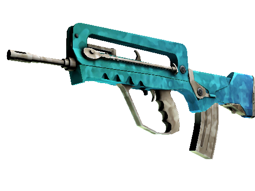

Armas do Jogo
Aqui você encontra as estatísticas e informações das principais armas do Counter-Strike 2.
Pistolas
- Glock-18 - Dano: 28, Preço: $300, Modo automático disponível.
A Glock-18 é a pistola padrão dos terroristas, conhecida por sua capacidade de disparo automático. É leve, barata e eficaz em combates a curta distância.
- USP-S - Dano: 35, Preço: $200, Silenciada, alta precisão.
A USP-S é a pistola padrão dos contra-terroristas, com seu silenciador oferecendo tiros precisos sem revelar a posição do jogador. É ideal para longas distâncias.
- P250 - Dano: 30, Preço: $300, Bom equilíbrio entre dano e preço.

Uma pistola acessível e de bom desempenho, a P250 é versátil, com um equilíbrio entre dano e velocidade de tiro, tornando-se uma opção sólida em rodadas econômicas.
- Desert Eagle - Dano: 63, Preço: $700, Alto dano, recuo elevado.
A Desert Eagle é famosa por seu dano massivo e por ser capaz de eliminar oponentes com um único tiro na cabeça, mas tem um recuo alto, exigindo precisão.
- R8 Revolver - Dano: 49, Preço: $850, Alto dano por tiro, recuo significativo.
Com um disparo lento, mas extremamente potente, o R8 Revolver oferece grandes recompensas para jogadores precisos, podendo neutralizar rapidamente os inimigos.
Submetralhadoras
- MAC-10 - Dano: 29, Preço: $1050, Alta taxa de fogo, leve.

A MAC-10 é uma submetralhadora leve com uma das maiores cadências de tiro, excelente para rodadas forçadas e combates a curta distância.
- MP9 - Dano: 26, Preço: $1250, Eficaz em combates de curta distância.
Favorita dos contra-terroristas, a MP9 oferece alta mobilidade e uma boa taxa de fogo, tornando-se uma excelente escolha para combates de curta distância.
- UMP-45 - Dano: 35, Preço: $1200, Boa precisão e controle.
A UMP-45 é uma submetralhadora poderosa e com boa precisão, sendo uma opção sólida para jogadores que preferem precisão em vez de volume de tiros.
- PP-Bizon - Dano: 29, Preço: $1400, Alta capacidade de munição.
Com um carregador de alta capacidade, a PP-Bizon é ideal para enfrentar múltiplos inimigos, embora seu dano seja ligeiramente inferior a outras submetralhadoras.
Rifles
- AK-47 - Dano: 36 (headshot: 111), Preço: $2700, Alto dano e penetração.
A AK-47 é o rifle mais icônico do jogo, capaz de eliminar oponentes com um único tiro na cabeça, sendo o rifle de escolha dos terroristas.
- M4A4 - Dano: 33 (headshot: 88), Preço: $3100, Boa estabilidade e precisão.
O rifle padrão dos contra-terroristas, o M4A4, oferece boa precisão e uma cadência de tiro balanceada, sendo eficaz em qualquer situação.
- M4A1-S - Dano: 27 (headshot: 88), Preço: $3100, Silenciada, melhor controle de recuo.
A versão silenciada do M4, a M4A1-S, tem menos munição, mas é mais precisa, oferecendo um ótimo controle de recuo.
- FAMAS - Dano: 30 (headshot: 87), Preço: $2050, Boa opção para econômico.
O FAMAS é uma excelente opção para os contra-terroristas em rodadas econômicas, com uma função de disparo em rajadas para melhorar a precisão.
- Galil AR - Dano: 30 (headshot: 83), Preço: $1800, Opção econômica para Terroristas.
O Galil AR é o rifle econômico dos terroristas, oferecendo um bom custo-benefício em situações onde o dinheiro é escasso.
- AUG - Dano: 30 (headshot: 86), Preço: $3300, Boa precisão e mira telescópica.
Equipado com uma mira telescópica, o AUG oferece precisão aprimorada a longas distâncias, sendo uma excelente escolha para contra-terroristas.
- SG 553 - Dano: 30 (headshot: 83), Preço: $3000, Semelhante ao AUG, mas para Terroristas.
O SG 553 é a versão terrorista do AUG, oferecendo mira telescópica e alta precisão em confrontos a longas distâncias.
Rifles de Sniper
- AWP - Dano: 115 (headshot: 100%), Preço: $4750, Um tiro, um kill.

A AWP é a sniper mais temida do jogo, capaz de eliminar qualquer inimigo com um único tiro, mas seu preço elevado exige boa gestão econômica.
- SSG 08 (Scout) - Dano: 70 (headshot: 202), Preço: $3000, Leve e eficaz.
A SSG 08 é uma sniper leve e econômica, oferecendo grande mobilidade e precisão para jogadores que preferem movimentação rápida.